全体方針
9/8の打ち合わせで伺った内容をそのまま角度に落とし込んでいます。文章版は 構成案・モック動画のページ を参照してください。
写真はすべてAIが生成したイメージ例です（実際のKAFUU様の店内写真ではありません）。「だいたいこういう距離感・こういう構図で」という角度の目安として見てください。
色味・光
黄・茶・緑のボタニカル ／ 明るい店内
一般的なリラクゼーションは暗めの店内が多いが、KAFUUは光が差し込む明るい店内で差別化したい、というご意向。カーテンを開けて自然光で撮影。
出演
アップより遠め・横顔OK
河上様ご本人は顔のアップは避け、遠め・横顔程度で出演希望。ドアで正面から笑顔挨拶、のような構図は撮らない。
★河上様のご出演カット「顔なしOK」＝完全に映さない／「遠めOK」＝顔が映ってもアップにしない、両方使えます
顔なしでOK（最優先）
P-1 優先
肩〜背中
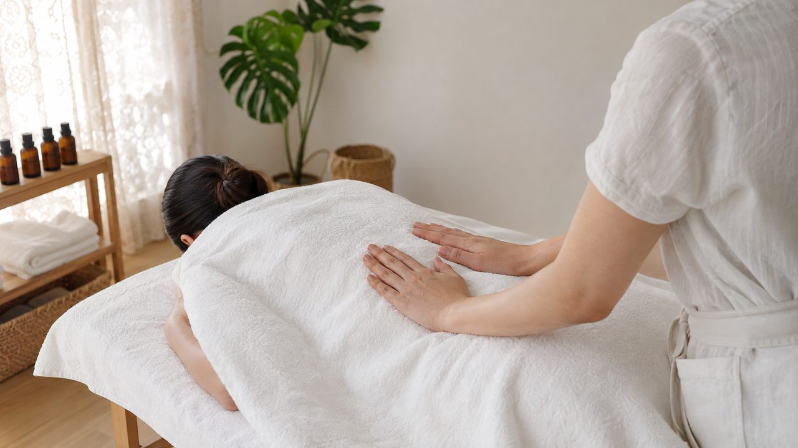
イメージ例（AI生成）真横 or 斜め上45度・見下ろし
うつ伏せの背面に手を当てているところ。お顔は入れなくて大丈夫。1カット5秒より少し長め・ゆっくり手を動かすと質感が伝わりやすいです。
出典: 動画1・3・4
P-2 優先
アロマを選ぶ手元
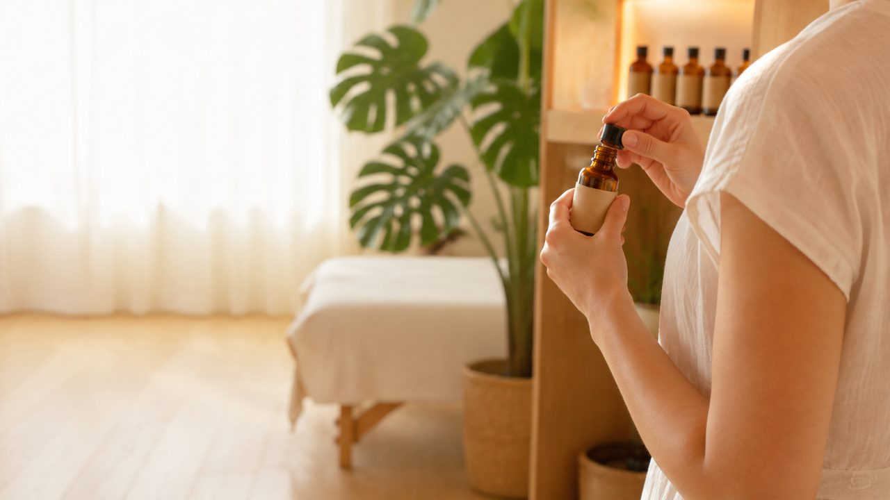
イメージ例（AI生成）近づいて手元アップ
ボトルを手に取っているところ。お顔は入りません。
P-4 優先
シーツを整える手元／後ろ姿
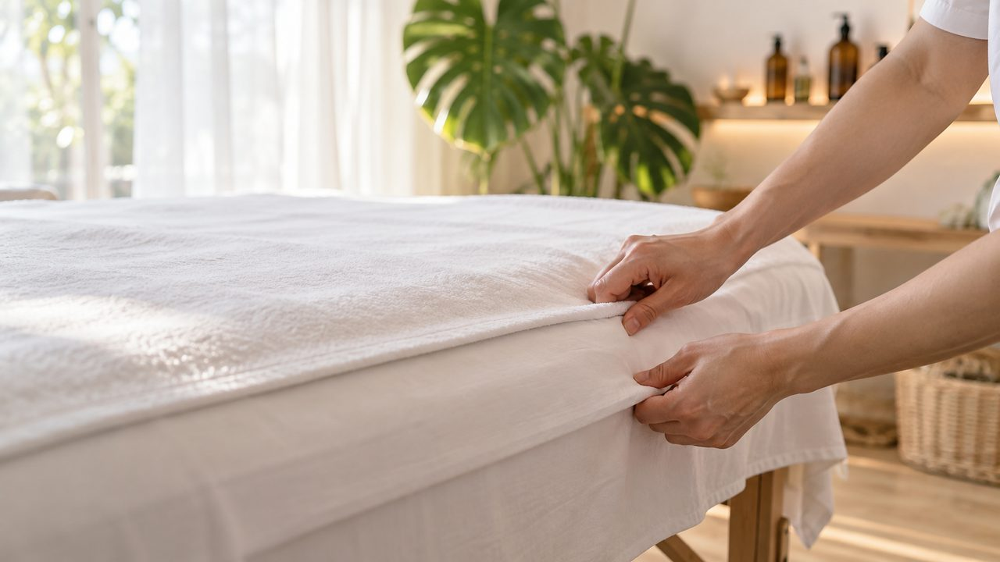
イメージ例（AI生成）真上見下ろし接写 / 斜め後方
シーツの角を真上から接写。または後ろ姿でシーツを整える動作を斜め後方・中距離で（後頭部の髪だけ映る程度）。
出典: 動画2
P-5 余裕あれば
肩甲骨まわり
写真は準備中です
P-1と同じ「真横・タオルの上から」の応用です
P-1と同じ「真横・タオルの上から」の応用です
真横 or 斜め上、手のひら全体
肩甲骨のあたりに両手を添えて。P-1の技法をこの部位に応用したものです。
出典: 動画3・4
P-6 優先
足〜ふくらはぎ
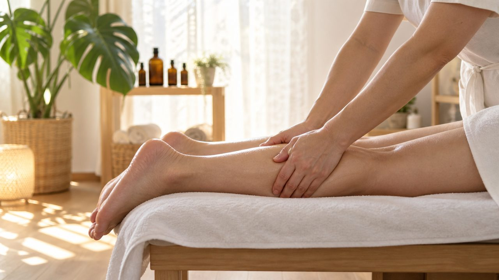
イメージ例（AI生成）真横・足元くらいの低い位置
手のひら全体で圧をかける様子を。最も再現しやすく効果的なカットです。
出典: 動画4
P-7 余裕あれば
鎖骨〜デコルテ
写真は準備中です
斜め上45度から見下ろして接写
★手が顎・首元まで上がる直前で止める（そこから顔が大きく映りやすいため）。
出典: 動画3
遠めなら顔が映ってもOK
P-3 余裕あれば
施術中の横顔
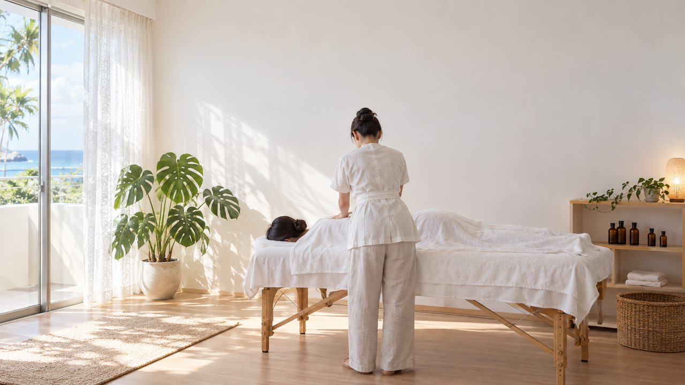
イメージ例（AI生成）背面〜斜め後ろ・距離を取る
カメラは遠めに。正面や近距離のアップは撮らない、この写真くらいの距離感で大丈夫です。
P-8
お茶を出す場面・会話シーン（2人の引き）
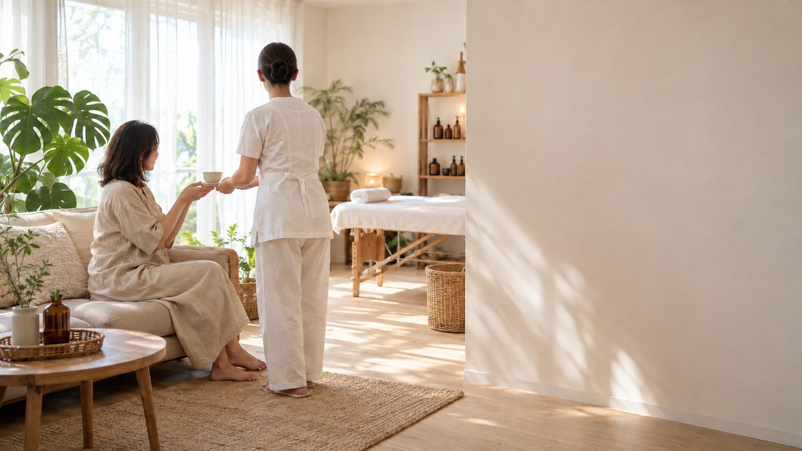
イメージ例（AI生成）部屋の中ほどから2人が入る引き
顔は判別できる程度に映ってOKですが、正面の近距離アップにはしないでください。
出典: 動画1・4
A. サロンの雰囲気カット優先度★★★
A-1
サロン全体
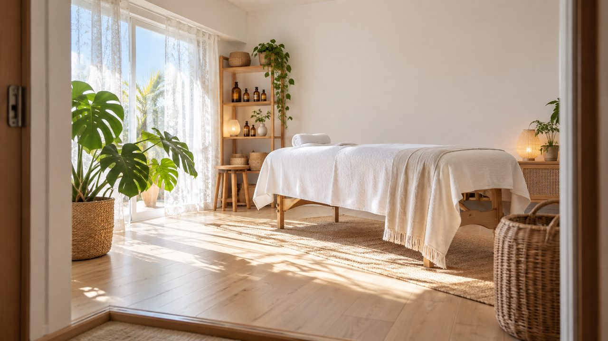
イメージ例（AI生成）入口から部屋全体
部屋全体が入る位置から。光が床に入っている時間帯で。
A-2
施術ベッド
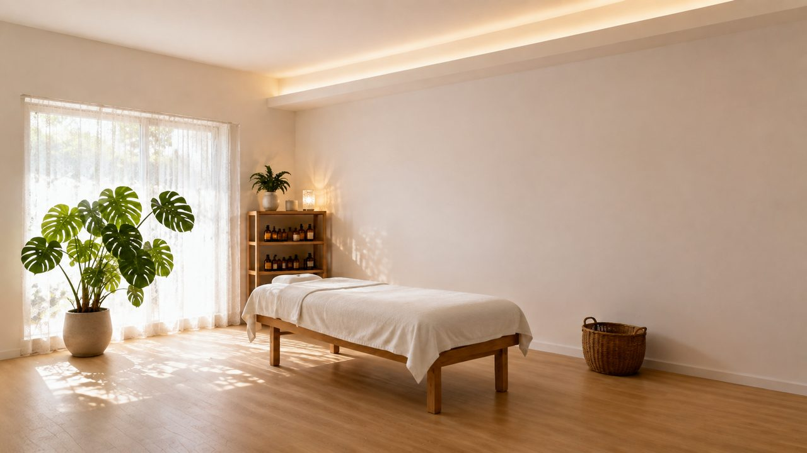
イメージ例（AI生成）ベッド全体が入る位置から
タオルはいつも通りにセットして撮影。
A-3
アロマボトルの棚
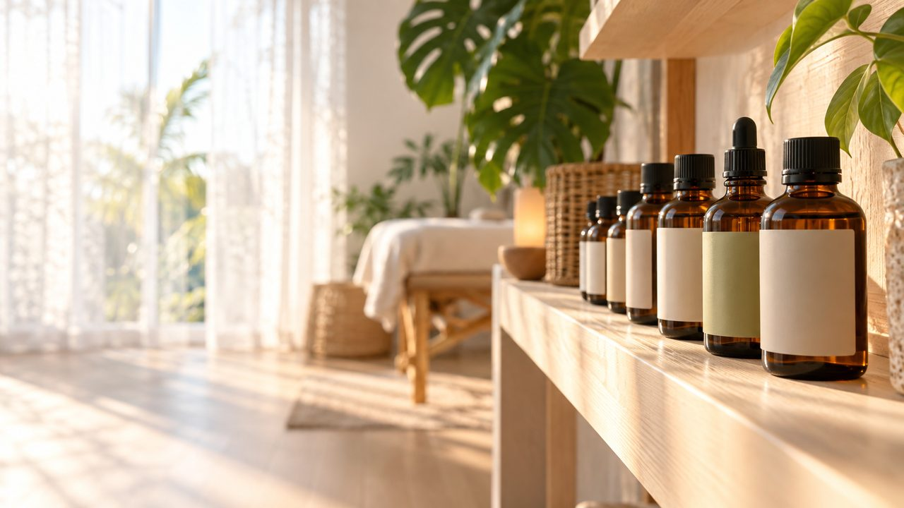
イメージ例（AI生成）近づいて横から
ボトルが並んでいる様子。近づいて撮影。
A-4
窓からの光
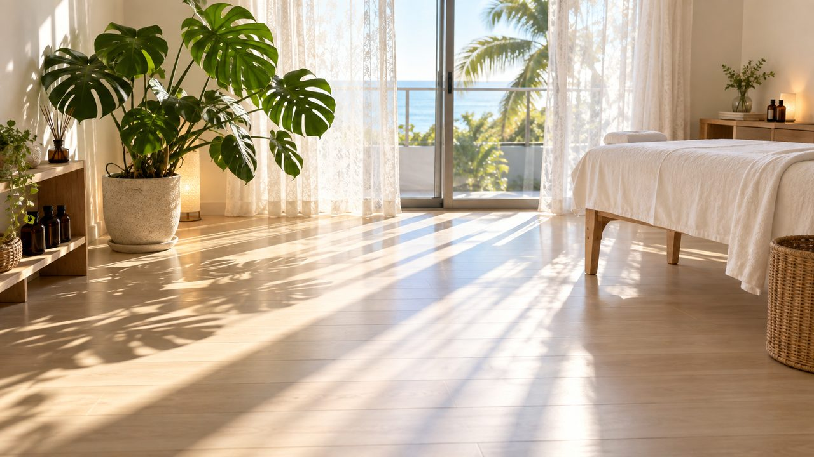
イメージ例（AI生成）カーテン越し・床に光が落ちる様子
窓・光・観葉植物などが一緒に入るように。
A-5
玄関・入ってくる目線
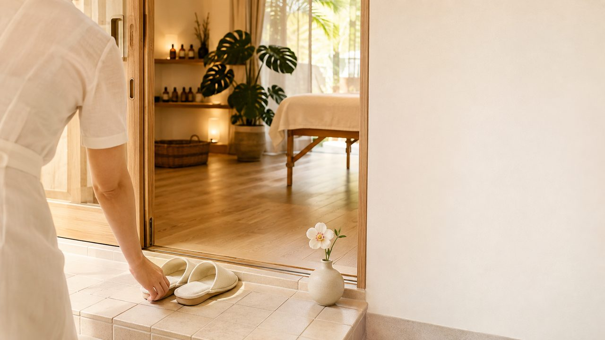
イメージ例（AI生成）ドアを開けて入る目線（POV）
奥のサロンが見えるように、入ってくる人の目線で。
A-6
施術ベッドを見下ろす角度
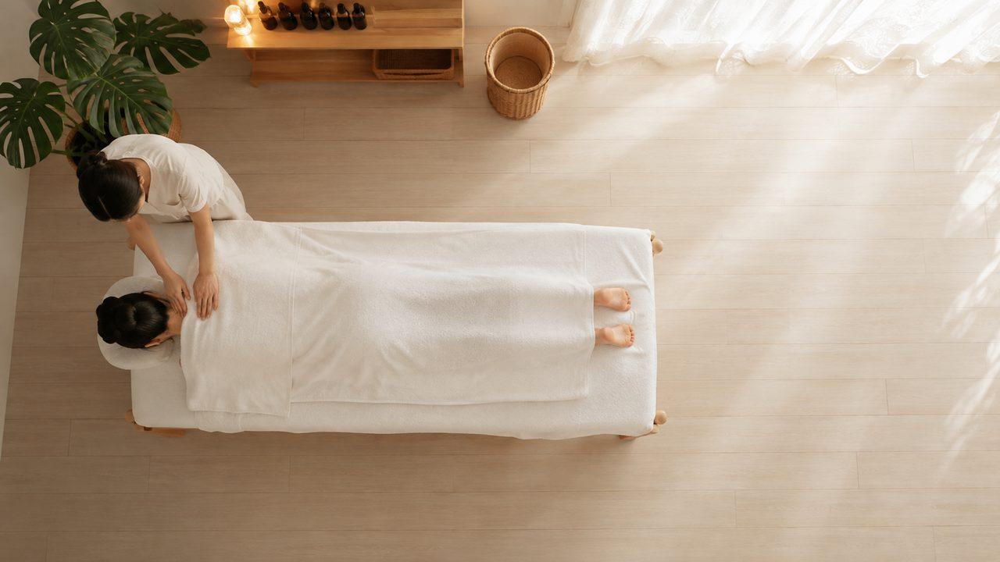
イメージ例（AI生成）可能なら高い位置から見下ろして
脚立や椅子の上など、少し高い位置からベッド全体を。難しければ無理はしなくて大丈夫です。
出典: 動画1
A-7
部屋全体＋観葉植物＋アート
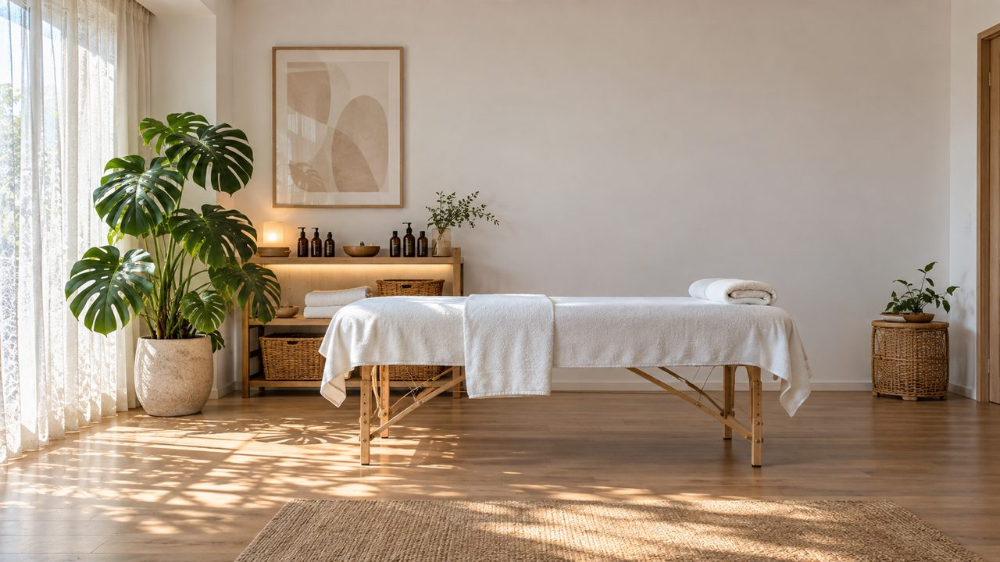
イメージ例（AI生成）正面から引き・人物なし
観葉植物やアートフレームも一緒に入るように。
出典: 動画2
参考動画の中には建物の外観・入口のカットもありましたが、自宅兼サロンのため外観の撮影は今回不要です。店内のカットだけで十分です。
ご指定いただいたYouTube動画は、ランプ等を効かせた暖色系の照明が特徴でした。「一般的なリラクゼーションより明るい店内」というご希望とは少し方向が違うため、A-1〜A-4・A-7の自然光を基本に、P-8のような場面だけ暖色を効かせる形で考えています。動画全体をこの暖色トーンに寄せたいご意向があれば、9/18の打ち合わせで教えてください。
B. お子さま連れカット優先度★★
B-1
お子さまスペース
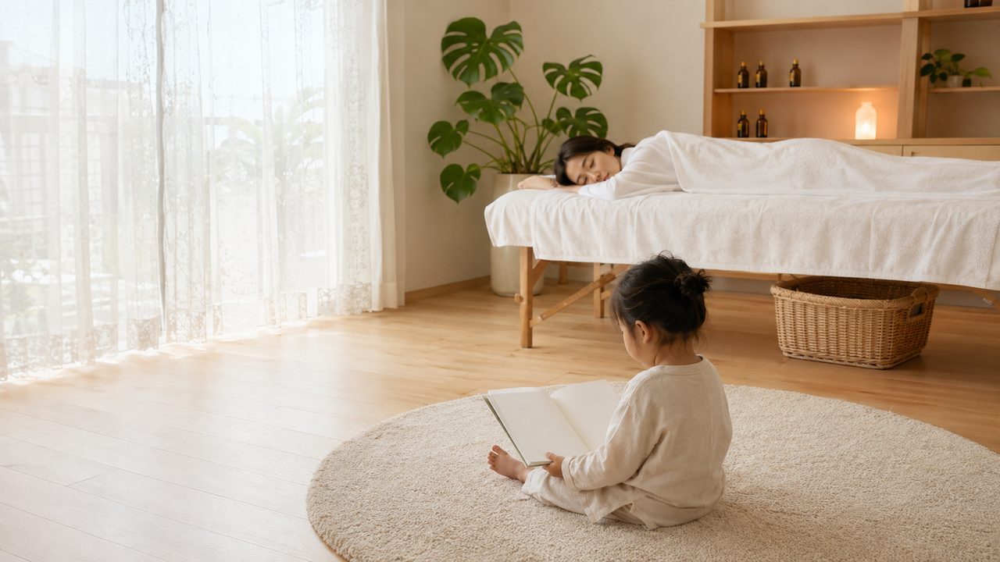
イメージ例（AI生成）部屋全体が入る位置から
ラグ・おもちゃ・絵本などいつもの状態で。
B-2
施術後のお茶
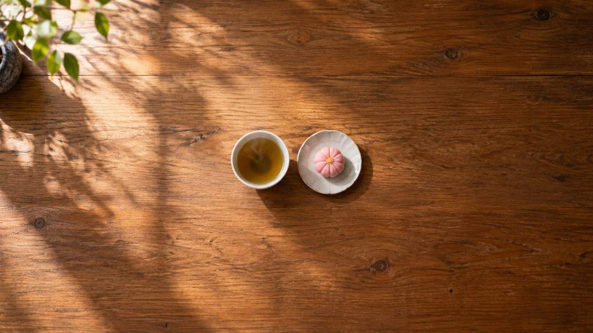
イメージ例（AI生成）真上から（フラットレイ）
テーブルに置いた状態を上から撮影。
★ご連絡いただきたいこと撮影前にお決めください
お客様役（施術を受ける役）を誰にするか決めて、教えてください。
1. 娘さんに出ていただく ／ 2. 別の方に出ていただく ／ 3. 実際の方は使わず、こちらでAI生成の人物にする
決まったら、撮影素材と一緒にその方が映った動画・写真を送ってください（顔が映っていなくても大丈夫です）。実際の方に出ていただく場合は、後日書面での撮影許可をこちらでご用意します。
1. 娘さんに出ていただく ／ 2. 別の方に出ていただく ／ 3. 実際の方は使わず、こちらでAI生成の人物にする
決まったら、撮影素材と一緒にその方が映った動画・写真を送ってください（顔が映っていなくても大丈夫です）。実際の方に出ていただく場合は、後日書面での撮影許可をこちらでご用意します。
共通の撮り方ルール
1. スマホは横持ち（縦だと動画にしたとき左右が黒くなります）
2. 昼間、カーテンを開けて自然光で（部屋の電気だけだと暗く写ります）
3. 1カット5秒以上、スマホを固定して止めて撮る（歩きながら・手ぶれは使えません。棚や台に置くだけでも大丈夫です）
2. 昼間、カーテンを開けて自然光で（部屋の電気だけだと暗く写ります）
3. 1カット5秒以上、スマホを固定して止めて撮る（歩きながら・手ぶれは使えません。棚や台に置くだけでも大丈夫です）
提出期限: 2026-09-13ごろまで ／ 送付方法: ギガファイル便（アップ方法は別途ご案内）／
次回打ち合わせ: 2026-09-18（金）9:30